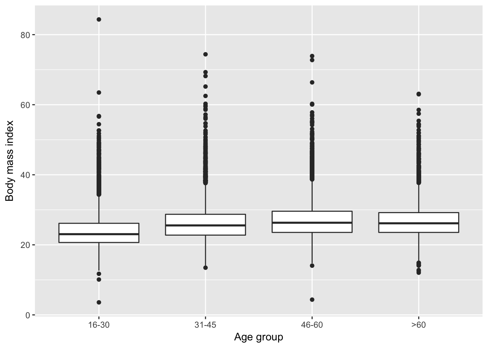
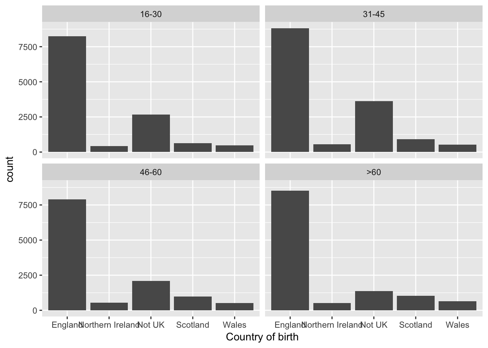
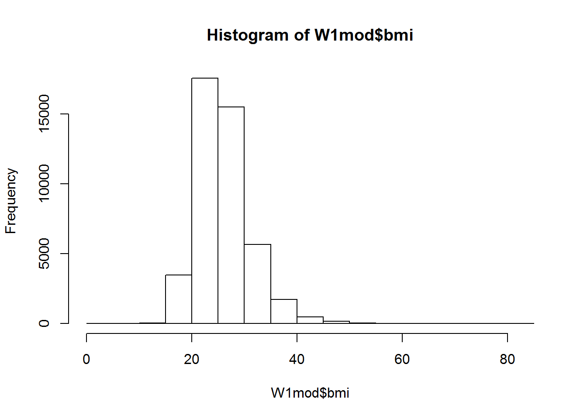
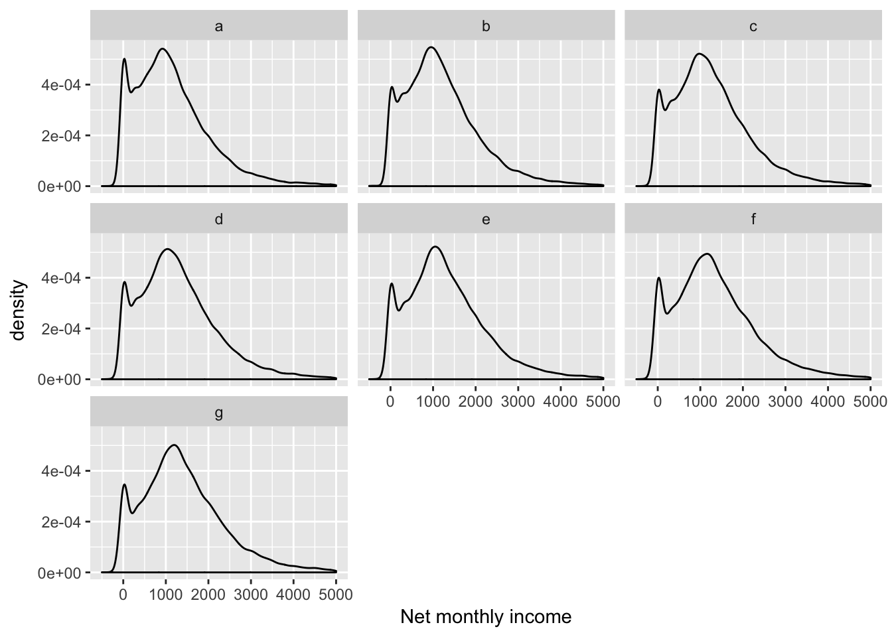
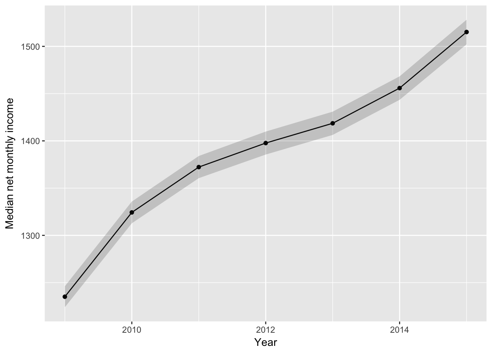

7 Data visualisation 2
Pre-requisite for this class: ch.3 (“Data visualisation”) from R for Data Science - http://r4ds.had.co.nz/data-visualisation.html
Also see the ggplot2 cheat sheet - https://www.rstudio.com/wp-content/uploads/2015/03/ggplot2-cheatsheet.pdf
At the previous class we looked at some simple data visualisation techniques (see http://abessudnov.net/dataanalysis3/datavis.html). Now we will explore how we can visualise longitudinal data.
7.1 Prepare the data
First we will create a longitudinal data set following the same algorithm as before (http://abessudnov.net/dataanalysis3/joining.html). I want to add a variable for income so that we have a longirudinal quantitative variable to visualise. We will use fimnnet_dv (total monthly net personal income without deductions).
library(tidyverse)
library(data.table)
library(knitr)
files <- dir("data/UKDA-6614-tab/tab",
pattern="indresp", recursive = TRUE, full.names=TRUE)
files <- files[str_detect(files, "us")]
vars <- c("sex", "dvage", "vote6", "fimnnet_dv")
for (i in 1:7) {
varsToSelect <- paste(letters[i], vars, sep = "_")
varsToSelect <- c("pidp", varsToSelect)
data <- fread(files[i], select = varsToSelect)
if (i == 1) {
all7 <- data
}
else {
all7 <- full_join(all7, data, by = "pidp")
}
rm(data)
}
# Reshaping the data into the long format
# Note the use of the extra = "merge" argument with separate.
# It prevents splitting the "fimnnet_dv" string.
UndSocLong <- all7 %>%
gather(a_sex:g_fimnnet_dv, key = "variable", value = "value") %>%
separate(variable, into = c("wave", "variable"), sep = "_", extra = "merge") %>%
spread(key = variable, value = value)
# Cleaning the data
UndSocLong <- UndSocLong %>%
mutate(dvage = ifelse(dvage > 0, dvage, NA)) %>%
mutate(sex = ifelse(sex > 0, sex, NA)) %>%
mutate(vote6 = ifelse(vote6 > 0, vote6, NA)) %>%
mutate(sex = recode(sex, "1" = "male", "2" = "female")) %>%
mutate(vote6 = recode(vote6, "1" = "very", "2" = "fairly", "3" = "not very", "4" = "not al all")) %>%
mutate(sex = factor(sex)) %>%
mutate(vote6 = factor(vote6))
# Let's write this data frame into myData
write_tsv(UndSocLong, "myData/all7new.tab")Note that net income can be negative (I am not sure why).
7.2 Visualising income
Now we want to visualise the distribution of income. There are several ways of doing this.
First, we can create box plots for each wave.
ggplot(UndSocLong, aes(x = wave, y= fimnnet_dv)) +
geom_boxplot() +
xlab("Wave") +
ylab("Net monthly income")## Warning: Removed 249806 rows containing non-finite values (stat_boxplot).
The chart does not look nice because of the outliers. We can either remove the outliers or display only a specified range of the box plots.
ggplot(UndSocLong, aes(x = wave, y= fimnnet_dv)) +
geom_boxplot() +
xlab("Wave") +
ylab("Net monthly income") +
ylim(-500, 5000)## Warning: Removed 255340 rows containing non-finite values (stat_boxplot).
We can see that the median income has been slowly increasing.
Another way to display these data is a density plot.
ggplot(UndSocLong, aes(x = fimnnet_dv)) +
geom_density() +
xlab("Net monthly income") +
xlim(-500, 5000)## Warning: Removed 255340 rows containing non-finite values (stat_density).
We see a peak at zero incomes, and for positive incomes the distribution is close to normal.
We can also create this chart for each wave separately.
ggplot(UndSocLong, aes(x = fimnnet_dv)) +
geom_density() +
xlab("Net monthly income") +
xlim(-500, 5000) +
facet_wrap(~ wave)## Warning: Removed 255340 rows containing non-finite values (stat_density).
Now we may want to visualise the change of income across the waves.
We can plot the income trajectories for each individual in the data set. Let us do this for the first five individuals.
# 5 individuals, 7 waves: 5*7 = 35
first5 <- UndSocLong %>%
slice(1:35) %>%
select(pidp, wave, fimnnet_dv)
kable(first5)| pidp | wave | fimnnet_dv |
|---|---|---|
| 22445 | a | NA |
| 22445 | b | NA |
| 22445 | c | NA |
| 22445 | d | 1140.000 |
| 22445 | e | 1602.667 |
| 22445 | f | 2012.000 |
| 22445 | g | 1840.000 |
| 29925 | a | NA |
| 29925 | b | NA |
| 29925 | c | NA |
| 29925 | d | 0.000 |
| 29925 | e | NA |
| 29925 | f | 2537.080 |
| 29925 | g | 2076.867 |
| 76165 | a | NA |
| 76165 | b | NA |
| 76165 | c | NA |
| 76165 | d | NA |
| 76165 | e | NA |
| 76165 | f | NA |
| 76165 | g | 1804.167 |
| 223725 | a | NA |
| 223725 | b | NA |
| 223725 | c | NA |
| 223725 | d | NA |
| 223725 | e | NA |
| 223725 | f | NA |
| 223725 | g | 3066.602 |
| 280165 | a | NA |
| 280165 | b | 1183.872 |
| 280165 | c | 2367.884 |
| 280165 | d | 2828.061 |
| 280165 | e | 2324.167 |
| 280165 | f | 2335.695 |
| 280165 | g | 3049.700 |
ggplot(first5, aes(x = wave, y = fimnnet_dv, colour = as.factor(pidp))) +
geom_point(na.rm = TRUE) +
geom_line(aes(group = pidp), na.rm = TRUE) +
ylab("Net monthly income") +
xlab("Year")
This chart nicely illustrates individual income trajectories, but if we try this for even 100 people the chart will be a complete mess.
UndSocLong %>%
slice(1:700) %>%
ggplot(aes(x = wave, y = fimnnet_dv, group = pidp)) +
geom_point(na.rm = TRUE) +
geom_line(na.rm = TRUE) +
ylab("Net monthly income") +
xlab("Wave")
Instead we can visualise summary statistics, such as mean or median. For a variable with outliers such as income median would be a better summary.
# First we create a data frame of medians.
medians <- UndSocLong %>%
group_by(wave) %>%
summarise(
medianIncome = median(fimnnet_dv, na.rm = TRUE)
)
kable(medians)| wave | medianIncome |
|---|---|
| a | 1011.622 |
| b | 1087.900 |
| c | 1150.000 |
| d | 1183.333 |
| e | 1200.000 |
| f | 1231.594 |
| g | 1299.812 |
# Then visualize.
# We need to add group = 1 because wave is not numeric
ggplot(medians, aes(x = wave, y = medianIncome, group = 1)) +
geom_point() +
geom_line() +
ylab("Median net monthly income") +
xlab("Wave")
There are a number of things we may want to do with this chart. First, we may want to change wave to year. Second, we may want to display confidence intervals for the point estimates.
First, let us create a variable for year. We need to do this in the original data frame. For each wave in the Understanding Society, the data were collected for two years. So for Wave 1 the field work was conducted in 2009 and 2010. For simplicity, I will code the first year only.
UndSocLong <- UndSocLong %>%
mutate(year = recode(wave, "a" = "2009",
"b" = "2010",
"c" = "2011",
"d" = "2012",
"e" = "2013",
"f" = "2014",
"g" = "2015")) %>%
mutate(year = as.numeric(year))Producing confidence intervals for the median is not straightforward (you need to use statistical simulation or some other statistical tricks) so I’ll use the mean instead.
UndSocLong %>%
group_by(year) %>%
summarise(
# I use the function t.test to get the means and standard errors
meanIncome = t.test(fimnnet_dv)$estimate,
# Here I calculate the 95% confidence interval
lowerIncome = t.test(fimnnet_dv)$conf.int[1],
upperIncome = t.test(fimnnet_dv)$conf.int[2]
) %>%
# and now I visualise
ggplot(aes(x = year, y = meanIncome)) +
geom_point() +
geom_line() +
geom_ribbon(aes(ymin=lowerIncome, ymax=upperIncome), alpha=0.2) +
ylab("Median net monthly income") +
xlab("Year")
The confidence intervals are quite wide. This is not surprising given our sample size.
Another chart we can produce is not only for the medians (or means), but for different quantiles. Let us take the following quantiles: 0.01, 0.05, 0.1, 0.5. 0.9, 0.95, 0.99. This will show the change in income for the 1% poorest, 5% poorest, 10% poorest, etc.
This can be done in several ways. If we use summarise to produce multiple quantiles it can get clumsy.
UndSocLong %>%
group_by(year) %>%
summarise(
quant1 = quantile(fimnnet_dv, 0.01, na.rm = TRUE),
quant5 = quantile(fimnnet_dv, 0.05, na.rm = TRUE),
quant10 = quantile(fimnnet_dv, 0.1, na.rm = TRUE),
quant50 = quantile(fimnnet_dv, 0.5, na.rm = TRUE),
quant90 = quantile(fimnnet_dv, 0.9, na.rm = TRUE),
quant95 = quantile(fimnnet_dv, 0.95, na.rm = TRUE),
quant99 = quantile(fimnnet_dv, 0.99, na.rm = TRUE)
) %>%
ungroup() %>%
# Now I need to convert this to a long format
gather(quantile, value, quant1:quant99) %>%
# and plot
ggplot(aes(x = year, y = value, colour = quantile)) +
geom_point(na.rm = TRUE) +
geom_line(na.rm = TRUE) +
ylab("Net monthly income") +
xlab("Year")A more economical way to write the code is the following. This time I will also select only people with positive net incomes.
library(broom)
UndSocLong %>%
filter(fimnnet_dv > 0) %>%
nest(-year) %>%
mutate(Quantiles = map(data, ~ quantile(.$fimnnet_dv,
c(0.01, 0.05, 0.1, 0.5, 0.9, 0.95, 0.99)))) %>%
unnest(map(Quantiles, tidy)) %>%
ggplot(aes(x = year, y = x, colour = names)) +
geom_point(na.rm = TRUE) +
geom_line(na.rm = TRUE) +
ylab("Net monthly income") +
xlab("Year")